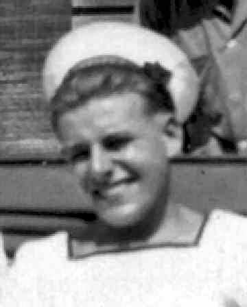

Air Arm Museum, Nowra. It was ironical that when 'Barnacle Bill Griffon' was
moved there, Totty got the job of restoring it, after which it commanded quite a
lot of interest on display at the Museum.
Air Arm Museum, Nowra. It was ironical that when 'Barnacle Bill Griffon' was
moved there, Totty got the job of restoring it, after which it commanded quite a
lot of interest on display at the Museum.By Bill Grice (Webmaster)

As we headed out into Port Phillip Bay came the call from our Tannoy, "All hands to Flying Stations". We were about to start our flying programme of Group Formation and Carrier Drill. Eight Fireflies combined with nine Seafires took off for this exercise. As they were manoeuvring into formation, we were struck with horror to see two aircraft collide in mid-air . It all happened in a matter of seconds. the two aircraft locked together and spiralled into the sea. We learned later that the aircraft were two Fireflies piloted by the squadron's Senior Pilot, Lt Cdr N.M. Hearle, and Senior Observer Lt K. Sellers, together with Lt R. Walker. D.S.C. and his TAG. CPO. W. Lovatt. All four crew were killed instantly. The remainder of the aircraft carried on and completed the exercises, but during the 'land on' a Seafire of 804 Squadron wrote off the Batsman's screen and crashed into the crash barrier. The arrester hook struck an Aircraft Handler - A/B Timmons - and decapitated him, killing him instantly. As a result of these terrible accidents the aircraft still airborne were instructed to land ashore at Point Cook. Our bad luck continued as a Firefly swerved on landing at Point Cook and did a ground loop which wrote off the aircraft. The body of Lt Cdr Hearle was recovered from the sea and was buried the next day with A/B Timmons. A very tragic day indeed.
...............................
Fifty three years later, widowed, and retired, one of my hobbies was Family History. So having many years of record researching experience under my belt, I decided one day to see how many of my old shipmates were still 'on the perch'. I was making considerable progress when one day I was told that there was a Fleet Air Arm Association in Australia. This association published a quarterly journal called 'Slipstream'. In the January 2000 edition was an article called 'Barnacle Bill Griffon'. The story told how a fishing boat trawling in Port Phillip Bay had its nets caught on something on the sea bed. The object was hauled to the surface, and although covered in barnacles it resembled a Merlin aircraft engine. The brass identity plates were cleaned up, and the details sent to Rolls Royce in the UK. A report arrived back saying that it was in fact a Griffon engine fitted to one of two Fireflies which collided on 20th July 1947 over Port Phillip Bay. What an amazing and unbelievable discovery! It's beyond belief that this could happen after fifty three years, but that's not the end of the story.
(Note:) This story of Barnacle Bill has since been proved untrue and is not ours. The wrecks of our two aircraft (complete with engines) have since been found and will be reported on in due course.
The article went on to describe our tour from leaving the UK, including events that could only have been known by one of us. I then noticed that the author's name was Roy Allman. Immediately 'Totty' Allman sprang to mind. Totty was one of my pals in 812 Squadron, and I felt sure that this was one and the same Roy Allman. A hurried letter to the editor of 'Slipstream' - who passed it on to Roy - confirmed that my suspicions were correct, and we are now in constant touch.
After our tour, Roy
volunteered to return to OZ on loan to help train the Australian Fleet Air Arm.
On his demob from the RN, he joined the RAN, married an 'ex pat' and settled
there. Even after reaching retirement age he still liked to be involved in
anything that flew, so he spent his time as a volunteer worker at the Fleet
Air Arm Museum, Nowra. It was ironical that when 'Barnacle Bill Griffon' was
moved there, Totty got the job of restoring it, after which it commanded quite a
lot of interest on display at the Museum.
This unbelievable twist of fate can only be regarded as 'An Impossible Dream'.